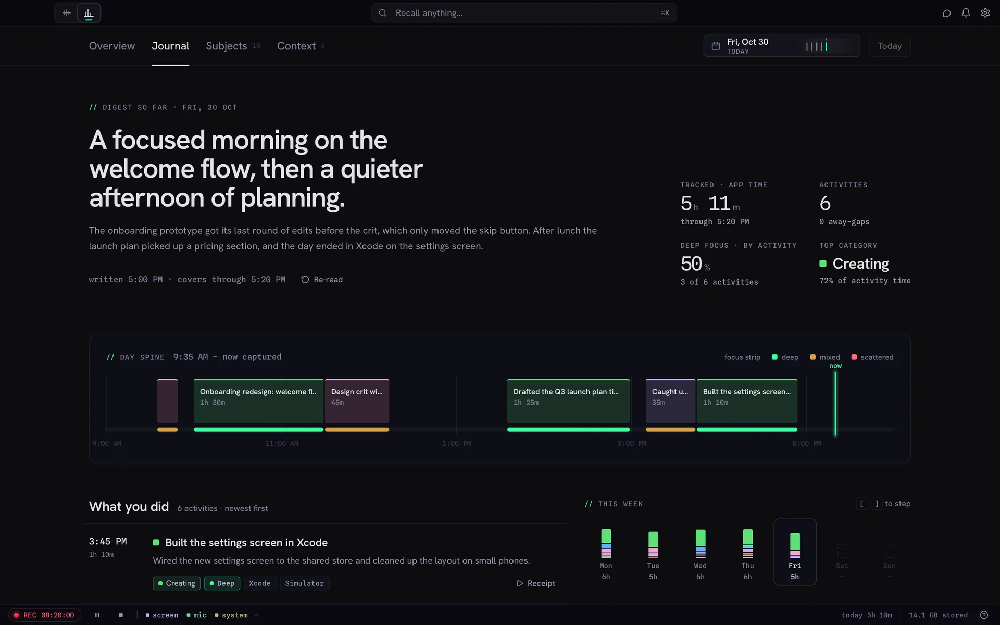
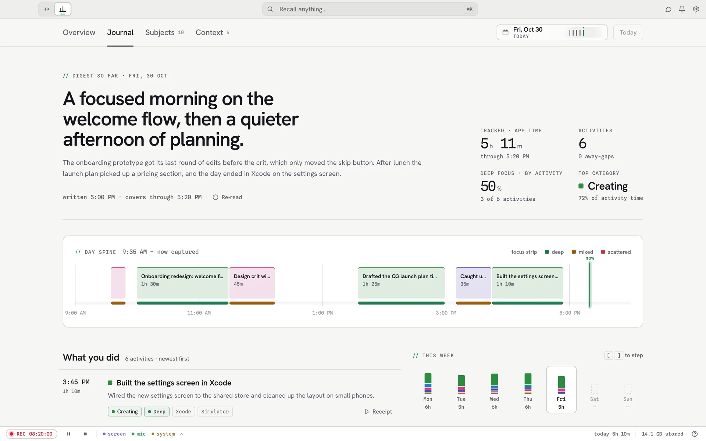
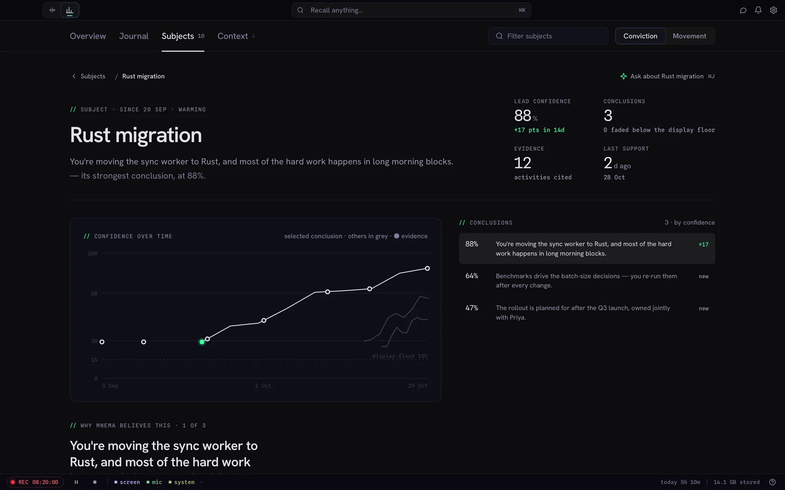
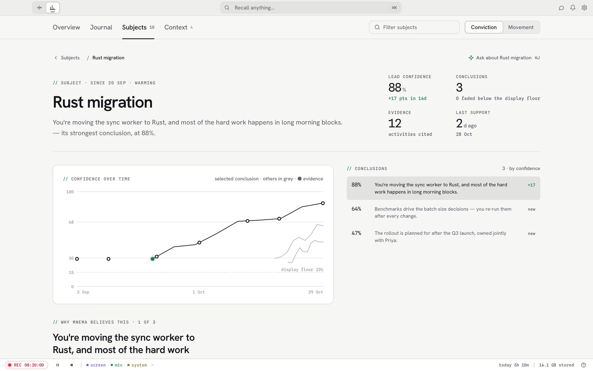

Mnema · for Mac
An instrument for remembering.
It keeps a private record of your screen and audio, and gives it back to you as moments you can find, answers you can check, and weeks you can read.
Specification
- Records
- screenmicsystem
- Lives
- On your Mac, encrypted
- Finds by
- Words, meaning, app, time
- Answers
- With links to the moment
- Forgets
- When you tell it to
- Costs
- $69 once · 30 days free
Fig. 1 · A moment


Scrub back to any second of your day.
Fig. 2 · An answer


Ask your past. Check the receipts.
Fig. 3 · A week


3a · The read so farA short, plain account of your week, rewritten as it goes.
3b · The day spineEach day as the things you actually did, and how focused you were.
3c · SubjectsThe threads you keep coming back to. Pin what's true, dismiss what isn't.
Read your week back like a journal.




Table 1 · Where everything lives
On your Mac. All of it.
| What | Where it lives | Your controls |
|---|---|---|
| Screen | Recorded and read into text on your Mac | Hide any app · pause any time |
| Audio | Transcribed on your Mac, speakers worked out locally | Mic and system audio switch separately |
| Secrets | Stripped from searchable text before search or AI sees them | Automatic |
| Your record | Encrypted on disk | Keep forever, or 7, 14, 30 days |
| AI answers | The provider you choose, or a model on your Mac | Your ChatGPT plan, your key, or local |
| Us | Nowhere. No account, no Mnema cloud, no telemetry | Nothing to turn off |
Get started
Never lose a thought you've already had.
Free for 30 days, no account and no card. Then $69 once, with a year of updates.